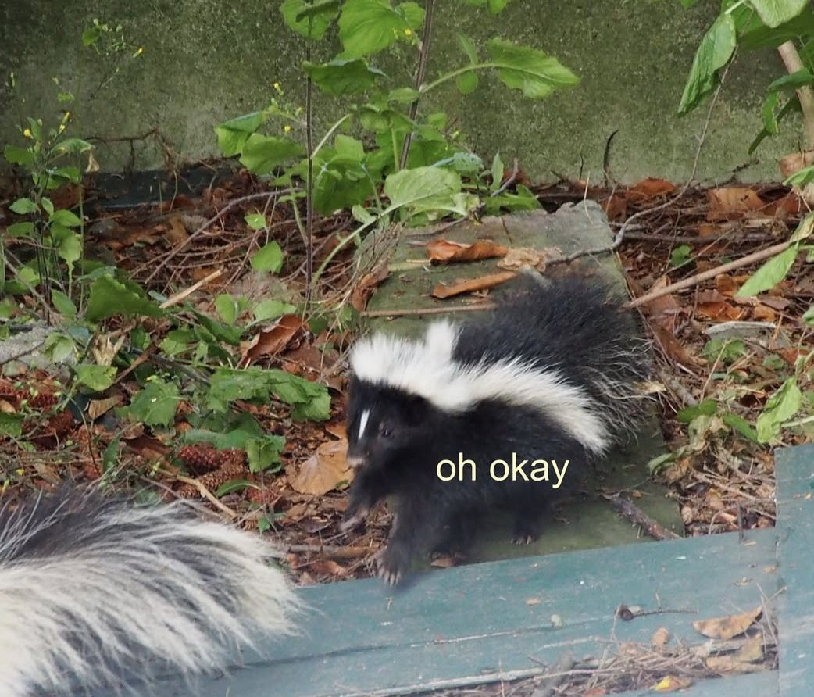
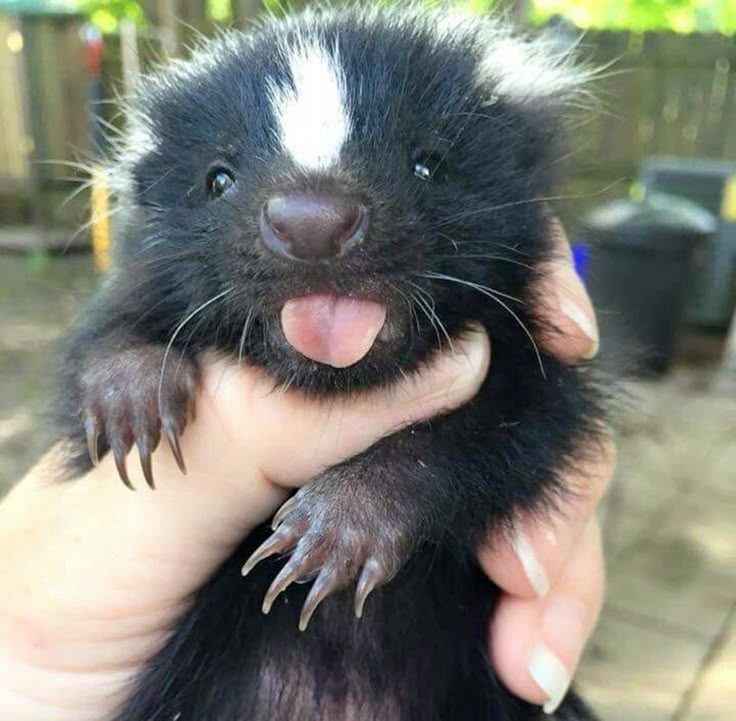
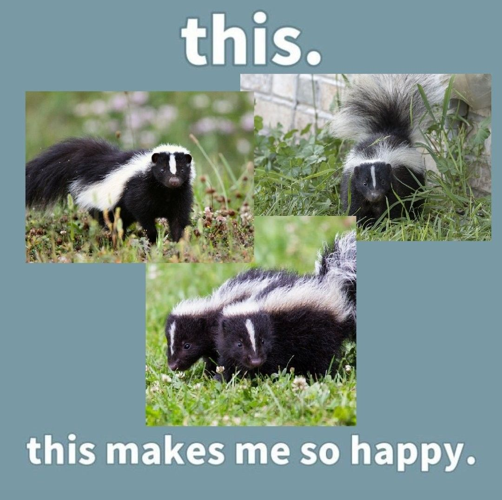

why are skunks cute?
"no sensible person would turn down a tail like that, right? And I also have two lovely, snow-white stripes on my back..."
skunks - charming predatory animals who are famous for their ability to defend themselves with unpleasant smell.

so, why are they cute when so stinky?
